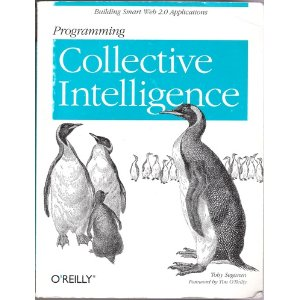
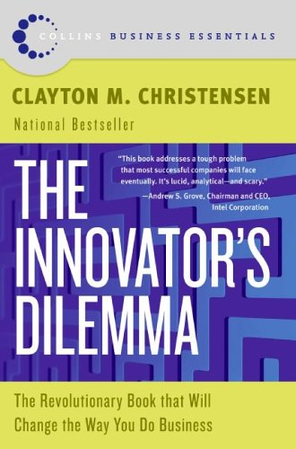
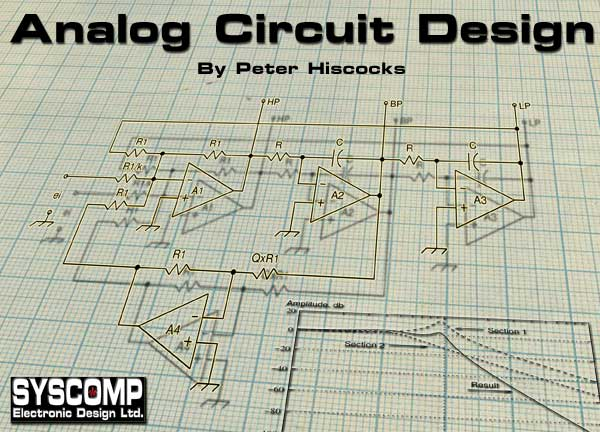

Table of Contents
Reading
Teaching Myself To Read Effectively
My efforts at Digitizing Books
THIS! Sort of at EdPuzzle.com
- Do your own at Video Digests
- This list is not necessarily visited that often, they just seemed interesting at the time and I might eventually get around to reading them. For now, I'll forget about them and remember later that I thought about them! On with the show…
- Udacity and Coursera allow you to cache their videos using their iOS apps. Mmm…seems good, lets you adjust playback speed. Coursistant is another option. PICK ONE AND MOVE ON.
Below is a collection of blog-quality ramblings on the topic, which I suppose are intended more to attract like-minded people than to convince the skeptical. (The skeptical should refuse to be convinced until they see more examples.) – Bret Victor, on Killing Math
* I really want to understand the language of math. Wow. The post at the end of the above doc cites Strogatz' Nonlinear Dynamics and Chaos, emphasizing using geometric methods to understand a differential equation (vector fields)
On Learning
- I read a paper on learning by Alan Kay The Future Of Reading, and specifies that learning should be explorative (like Montessori, Papert, and others have discerned) and led by a good tutor that provides invisible structure…then investigates how far we are in getting computers to fill in that role.
- Another big point is that good learning is always uncomfortable, making your body do something it's not used to. Get used to persevering through it!
- (metnioned by above paper) Teaching Problem Solving to Navy IT trainees as a part of a company called Acuitus, which is automating the education and reducing training time by an order of magnitude.
Learning is inherently rewarding. Need a concept focus, not a fact focus. Ask the student to explain the concepts. Teachers asking questions is often better than making statements
People will happily practice given a safe environment, problems at a good difficulty, a continuous stream of problems
From a Quora thread on Learning and learning advanced mathematics
- One of the main skills of research scientists of any type is knowing how to work comfortably and productively in a state of confusion.
- When trying to understand a new thing, you automatically focus on very simple examples that are easy to think about, and then you leverage intuition about the examples into more impressive insights.
- You don't get a lot of time to gloat as a mathematician. Once you learn something, you move onto the next thing.
- Text to speech (TTS) for reading books is done with https://getspeechify.com/ (Free!) or something else. Google and Apple are using nice new Deep Learning models…https://machinelearning.apple.com/2017/08/06/siri-voices.html and https://deepmind.com/blog/wavenet-launches-google-assistant/
On Doing Exercises
- “He who knows only his own generation forever remains a child.” –-Cicero
- From Visual Group Theory: “The following exercises are thought experiments to help you understand the concepts just discussed. With mathematics and similar scientific endeavors, the exercises usually require some thought, and therefore take more time than the reading itself. Although you can appreciate the material with a quick reading, you can know it intimately only with lengthier consideration. Therefore, do not be discouraged if the exercises take some time; this is normal. Also, feel no shame looking up the answers to a few exercises in the Appendix to get the idea for how to complete them.”
Finding a good book (for me)
- Usually the title / reviews will have the words “practical” or “intuitive” or “lucid”
- Read the Amazon reviews closely….
- So, my suggestion for you is as follows. Pick up the book from a library. And go straight to a topic that you are somewhat familiar with. And try to see if <insert professor here> (Prof. Strang) does an excellent job on that topic. I did that for a few of them, and I found that the book is not sufficient explaining those topics.
Finding Good Similar Books/Blogs/Articles
- What is important for me is almost a direct connection with the author, almost like we were sitting right next to each other and talking about the subject. I ask a question, they answer it in the next paragraph, etc. I like to find authors that write like this.
- There's no automated tool for finding these books yet, since it's such a huge (people-wise) and difficult (AI-wise) project. I think Google is starting on it with Google Books.
- Sort of good: http://booklamp.org/, but doesn't capture the conversational style.
- A great way to do this is finding people who talk like you talk. I use a Google Custom Search Engine that only searches sites like Reddit, Quora, good blogs, etc. so that I don't have to wade through the “popular” cruft that isn't actually that meaty! https://cse.google.com/cse?cx=015271634920807569686:23w0sc_zfe4
Getting Access To Books
- You can request books at your local library and they will deliver it there for free or very cheap!
- Books originally published >80 years ago are now out of copyright in the U.S. and anyone is free to re-print the book without contacting the original author or their foundation. Also, this means that you can distribute digital copies of the book for free. Lots of good old books are online that way, mainly at Archive.org and Google Books.
- OpenLibrary.org (an offshoot of Archive.org) offers the ability to check out in-copyright scanned books that they have physical copies of in San Francisco. It doesn't really matter that authors don't like people making scanned copies of their books, it is legal under the law. However, OpenLibrary seems to be pushing it beyond personal use.
The Plan
Learning and Remembering
- Optimize for energy spent, not time spent doing it. Also, might be good to exercise during lunchtime to boost ability to stay focused / enjoy work.
- Relearn how to learn and remember effectively. Doug Engelbart thinks it's the place to focus the most effort so that less effort is wasted in redoing your notes later!
- It's kind of like the importance of learning how to shoot a basketball the “right” way. You might see faster improvement shooting the wrong way, but you'll never be as good as the guys that practice the right way for a long time. Note, the “right” way at the time might not always be the most right, as in the case of the Fosbury Flop! INSERT IMAGE HERE
- We have a tendency today to only accept things that are easy to learn, and natural to use. Since when is that the most effective way to do things?
Learn Anything in Less Time, How To Learn Really Hard Subjects, (Tim Ferriss) How To Take Notes like an Alpha Geek How To Study- They were sorta helpful. Not as good as a good book, which I think I found at Goodwill. Becoming a Master Student (Becoming a Master Studentnotes) and maybe WikiHow: Take Better Notes and Take Notes
- How To Read A Book: A Classic Guide To Intelligent Reading by Adler and van Doren. Even the reviews on Amazon have jaw-dropping statements. Anything by Adler looks really good…what should I read first?
- Studying not just for classes, but for the work world too! How do ya do that…?
- Probably should take notes using LaTeX (or the wiki for that matter) so that you can keep a digital copy easily. See Taking Notes
{kind=link}
{kind=link}
The Reading
- Book list / lists from various smart people. (Bret Victor, Bill Gates, Knuth) https://gist.github.com/nickloewen/10565777. Glench is good as well as Joel Spolsky Book List
- Probability Univ. of Texas Class, great demos. http://granite.ices.utexas.edu/coursewiki/index.php/Main_Page
- Relearn calculus intuitively. Walk through the Practical and Intuitive calculus book (Solutions here) + Calculus Made Easy (optional, Strang's online course and free book on Calculus)
- Spivak Calculus, more an introduction to real analysis. More passioned commenters soon.
- Linear Algebra with Strang + video lectures? At least the homeworks
- Machine Learning Class
- Politics and the English Language (by Orwell)
- Another is Brave New World Revisited by Aldous Huxley
- Essential Cell Biology, the cell book that Nick (your brother) recommended. Has side panes that show the experiments behind the conclusions that are made about the cell.
- Another one referenced by The Little Schemer Book is Molecular Biology of the Cell. Alan Kay likes the 3rd edition of this book
- Take a break with: The Joy Of X, a book by Cornell professor about really cool mathematical and physics insights that are important to understand and motivate math understanding.
- Newton's Principia Mathematica? Sparknotes and Stanford Encyclopedia of Philosophy
 Computational Science and Engineering / Mathematical Methods for Engineers
Computational Science and Engineering / Mathematical Methods for Engineers- Redo probability, especially with regard to random processes. I like…took the class too >.< Hopefully you will find some more motivating examples!
- Differential Equations, important, but for some reason not that interested. Maybe do it graphically?
- ODE by Tenenbaum (Dover, highly recommended), or maybe title by Devaney
- Differential Equations and Their Applications: An Introduction to Applied Mathematics, maybe, seems more theoretical / rigorous
- Linear Programming / Optimization? Finish the bridge optimization project
- Anant Agrawal's edX course on circuits. Still sorta don't get how to use an op-amp effectively!
- Calculus of Variations / Optimal Control Theory (finish the car skidding around a turn question)
- …
- Cal Newport liked You Are Not A Gadget, talking about how open-source things are not as good as privately developed things. On WILINET in e-book form. Might get to eventually
- AI, eh, we'll see
- A HackerNews reader highly recommended An Introduction to Logic by H.W.Bhttp://www.amazon.com/gp/product/0307389979/ref=as_li_qf_sp_asin_il?ie=UTF8&camp=1789&creative=9325&creativeASIN=0307389979&linkCode=as2&tag=stuhac-20. Joseph. Probably should do the above somewhat first though.
- Studying logic was also recommended by Paul Washer (preacher). I think he was referring to Rev. Isaac Watts book on the topic (showed a teacher teaching schoolchildren this really hard stuff!): Logic: The Right Use of Reason in the Inquiry After Truth. Another book of his (The Improvement of the Mind) inspired Michael Faraday to understand things at a young age.
- The ArtOfLogic.org uses Isaac Watts' books as a foundation for their courses.
- Tips of things to watch by Mel Siegel:
- Tom Lehrer on YouTube (Harvard professor with good inside jokes, music)
- James Burke Connections series kinda like Discovery Channel / Bill Nye
- Feel free to skip forward to the other topics here to see a preview of cool stuff. And then realize you really need to work the fundamentals.
Most of the books I have either bought or found copies of and have them in PDF form. ROUND 3
- Computational Science and Engineering (OCW course by Gilbert Strang)
- There's an older version here, and section II would be good to do too.
- Painless Conjugate Gradient method (how to solve some schtuff)
- Maybeck Stochastic Models Estimation and Control (the rest of the book that included the chapter on the intuitive Kalman Filter explanation you read from the UNC website)
- Algorithm Design Manual looks interesting + answers are online.
- Also another algorithms book / class. http://jeffe.cs.illinois.edu/teaching/algorithms/
Fibonacci Sequence
- Various Python implementations (good step-through) http://en.literateprograms.org/Fibonacci_numbers_(Python)
- Intuitive mathematical derivation: http://www.maths.surrey.ac.uk/hosted-sites/R.Knott/Fibonacci/fibFormula.html
- Wikipedia: Fibonacci number and Recurrence Relations plus lots of ways to solve them, mostly mathematically
- Good derivation of fibonacci other than Strang: http://www.the-idea-shop.com/article/218/the-linear-algebra-view-of-the-fibonacci-sequence
ROUND 2
- Introduction to Databases (50% confident on usefulness): https://class2go.stanford.edu/db/Winter2013/preview/
- Data Mining might be cool too: http://infolab.stanford.edu/~ullman/mining/2009/index.html
- Kaggle Tutorials (a machine learning site similar to TopCoder)
- Eigenvectors do a lot of stuff, including solve differential equations and fibonacci sequences (a difference equation).
- Other uses of eigenvectors, including the end state of a Markov chain and spectral clustering (used in machine learning). Would be good to understand…
- Used a lot in graph theory too apparently!
- Would like to pleasurably read the rest of the math articles on the website: http://the-idea-shop.com/
- Understand the lots of recursion at Physicist and Mathematicians site: http://www.askamathematician.com/2010/07/q-whats-the-chance-of-getting-a-run-of-k-successes-in-n-bernoulli-trials-why-use-approximations-when-the-exact-answer-is-known/
CLEANING UP THE TABS SO I CAN USE CHROME AGAIN
- Math (Linear Algebra, ….), CS (AI (especially Norvig's book), and another one on Amazon that you added to cart)
- Stanford Engineering Everywhere classes are great (includes Stephen Boyd's lectures on Convex Optimization) AND INCLUDES VIDEOS.
- Also want to finish Udacity intro courses on AI and self-driving car.
- Great video lecture on statistical data mining as a Google tech talk
- I really would like to read Dover Publications Math or CS books…including
- Calculus, an Intuitive and Physical Approach (solutions manual)
- Mathematics and the Physical World
- Essential Calculus with Applications
- Linear Algebra by Shilov
- Combinatorial Optimization: Algorithms and Complexity
- Google Machine Learning book and Machine Learning A Probabilistic Perspective (both here: http://mitpress.mit.edu/books/series/adaptive-computation-and-machine-learning-series)
- Amazon reviewer recommends the CalTech guys' book first though.
- Math: A Very Short Introduction series looks really interesting. I want to read the math one, maybe the logic or philosophy one too.
- The Willpower Instinct, recommended by Randy S. Still need to finish it, looked pretty interesting.
Science Fiction
-
- Synopsis is asking the question: how many “smart” question-asking people do we need in the world?
- Ben's friend Murium recommended it.
Electrical Engineering
- Antenna Design and stuff: http://www.amazon.com/Antennas-Propagation-Wireless-Communication-Systems/dp/0470848790/ref=cm_cr_pr_product_top. Reviews don't say it's good, but the illustrations are good. You have a digital copy.
Programming
- . Excellent book! Wish I could find more like this one. Goes over with good examples neural networks, bayesian filtering (how it works for single keyword spam filtering but not double-word spam filtering…not sure how you fix that one yet). Plus a little on SVM's and Kernel Methods. Mostly for data mining, but very real examples you could definitely make yourself and extrapolate.
- FREE BOOKS! Haven't read them yet though. Located at Green Tea Press
- They recommended: Information Theory, Inference, and Learning Algorithms (also free, pretty decent looking)
The human brain never ceases to amaze me. “A huge fraction of our brain is devoted to vision. One of the neglected features of our visual system is that the raw image falling on the retina is severely blurred: while most people can see with a resolution of about 1 arcminute (one sixtieth of a degree) under any daylight conditions, bright or dim, the image on our retina is blurred through a point spread function of width as large as 5 arcminutes (Wald and Grin, 1947; Howarth and Bradley, 1986). It is amazing that we are able to resolve pixels that are twenty-five times smaller in area than the blob produced on our retina by any point source.” David MacKay, Information Theory, Inference and Learning Algorithms, p. 565
My Walk
- Desiring God (recommended by Francis Chan) and Don't Waste Your Life, by John Piper
Cooking
- I'm just here for the food, by Alton Brown. At the OC Costa Mesa library…might be fun to peruse over.
Physics
Design
Music
Reddit guide to Music Theory (books) Music Theory for Guitarists Complete Idiot's Guide to Music Theory Jim Aikin's Guide to Music Theory
Invention/Innovation
//'If I'd asked customers what they wanted, they would have said "a faster horse".' --Henry Ford
- Creating Breakthrough Products, and other ones from Jonathan Cagan including Built To Love and some other ones
. Another upvote
{kind=link}
{kind=link}
Electronics
Analog
-  Best PDF/Book I've found on getting into the math behind analog circuits and provides some very practical examples of why you need to know this stuff!
- Status (12/18/10): Reading
- Op-Amp Applications Handbook Free PDF, seems really good!
Digital
Science
- The Art of Doing Science and Engineering. By Richard Hamming, more for people thinking about grad school. PDF of You and Your Research chapter.